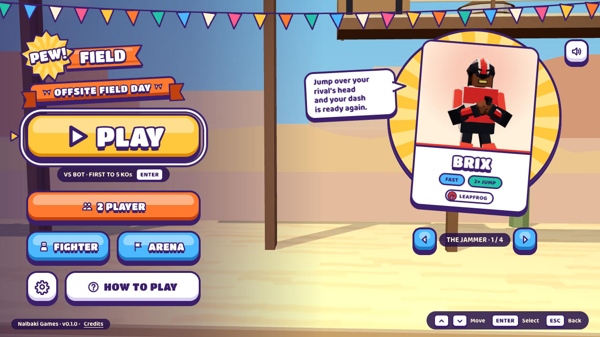
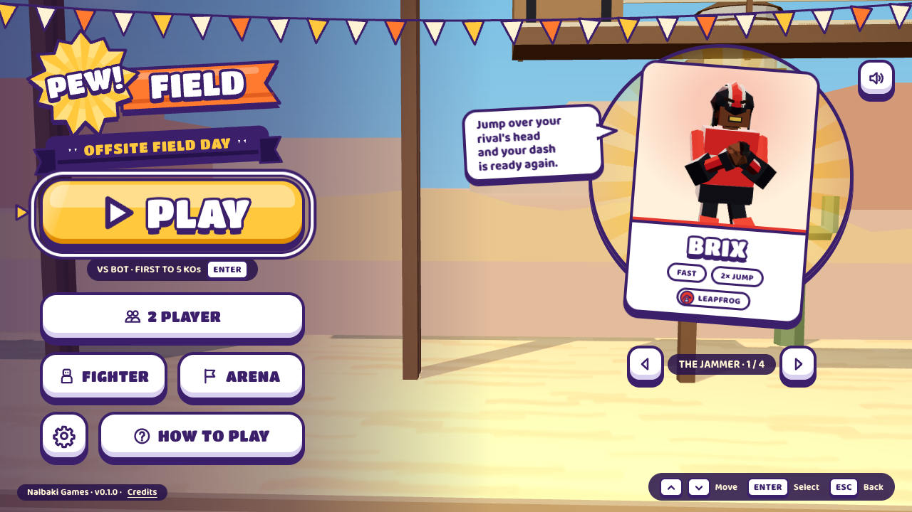
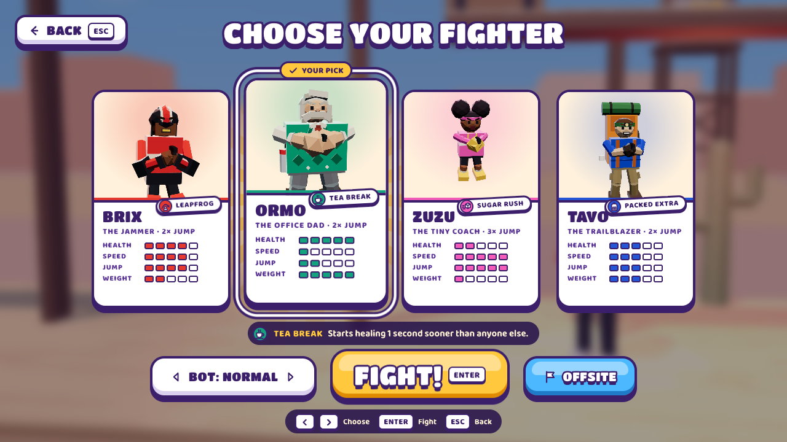
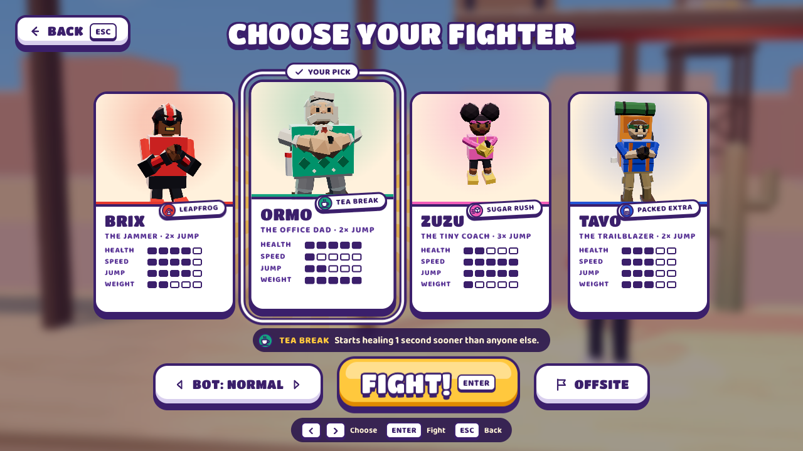
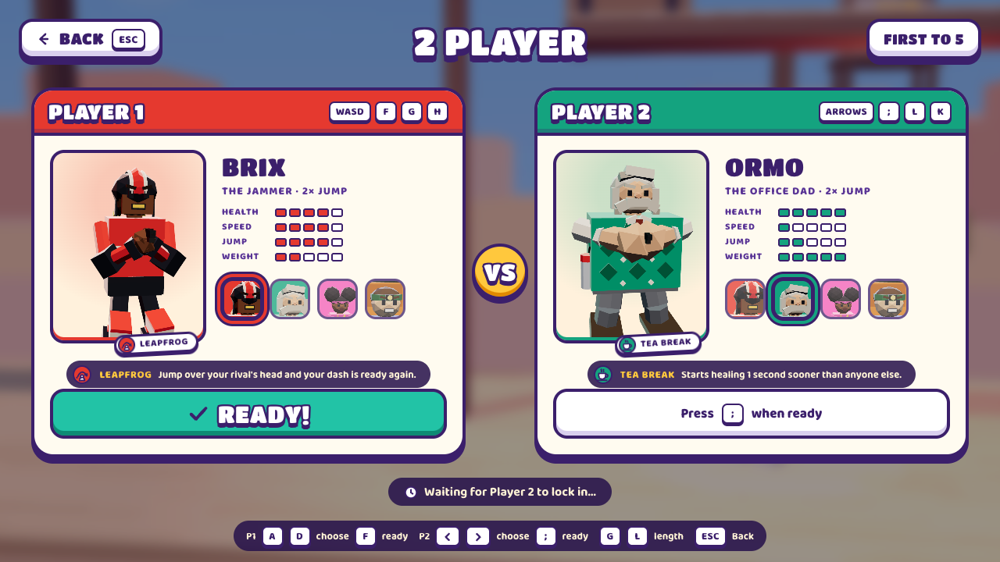
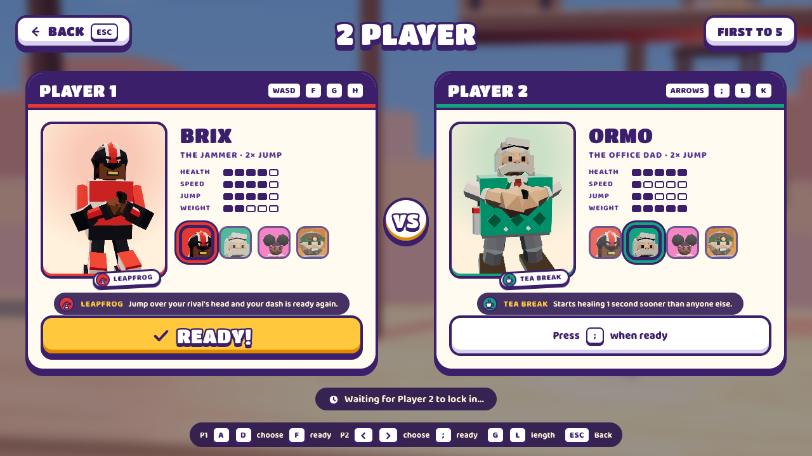
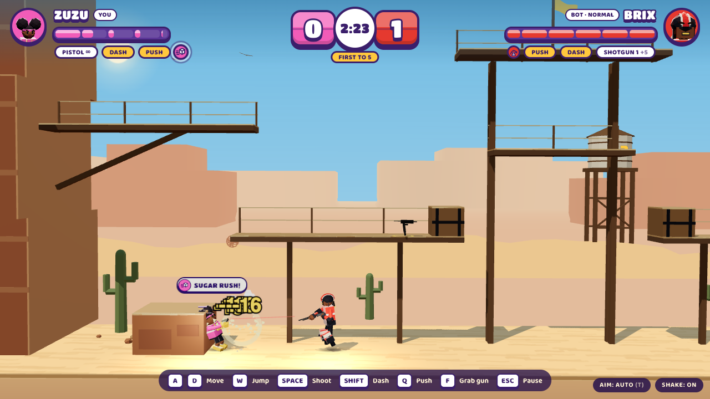
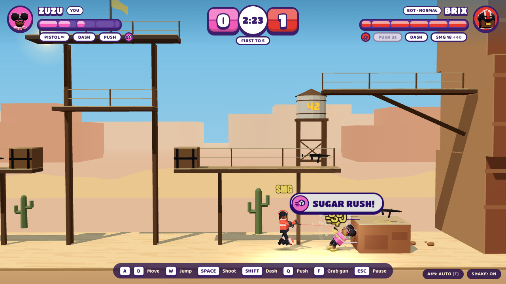
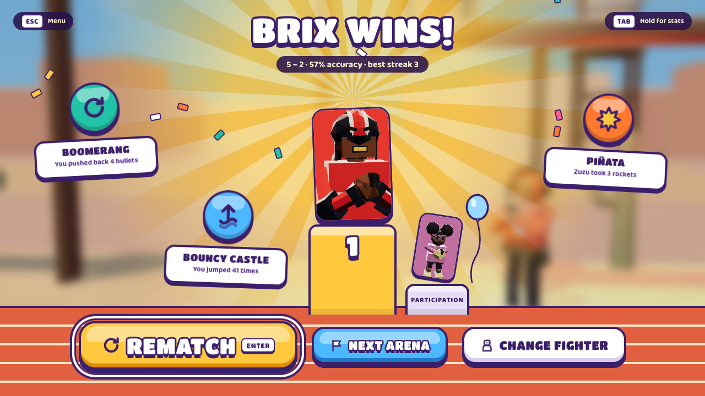
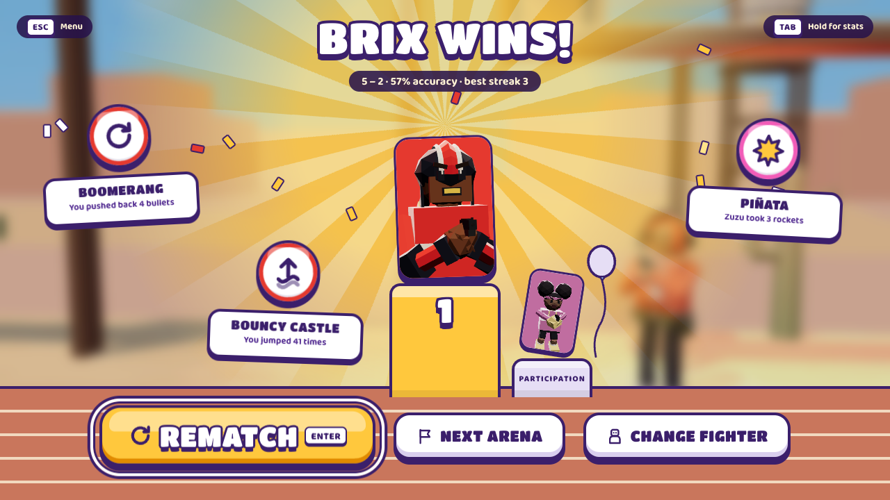

Real build, 1280x720, Chromium ANGLE Metal. AFTER = the rules of colour-balance.md injected into the same build (calm.css + after.mjs), not a paint-over. Rule: grape + white structure, SUN is the only action colour, fighter colours only on fighters, orange only in the wordmark and bunting.









